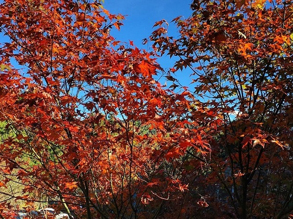
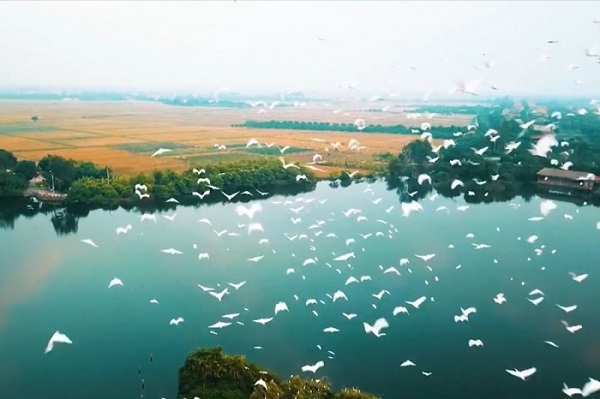
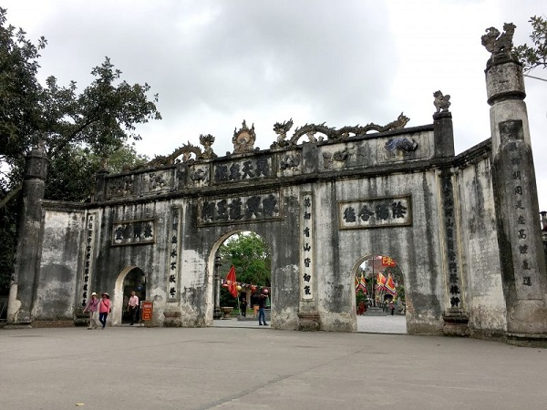

NHỮNG ĐỊA ĐIỂM CHECK-IN "SỐNG ẢO" ĐẸP TẠI HẢI DƯƠNG
Mục Lục
Hải Dương đẹp tình người đằm thắm
Mai em về cùng ngắm Côn Sơn
Thông reo vi vút rập rờn
Suối róc rách chảy còn hơn tiếng đàn
Đến Kiếp Bạc với ngàn di tích
Về Hải Dương thật thích biết bao...
Thơ: Hoa Đồng NộiHải Dương là một trong những điểm đến hấp dẫn ở miền Bắc được các bạn trẻ yêu thích trong thời gian gần đây. Cùng Hải Dương Có Gì? điểm danh những điểm đến thú vị để check-in ngay hè này nhé.
Rừng phong lá đỏ
Nếu bạn đã từng xuýt xoa trước mùa lá phong đẹp tuyệt ở Canada thì giờ đây bạn chỉ cần về Hải Dương là có thể check in rừng phong lãng mạn. Đó là một khu rừng nhỏ thuộc địa phận chùa Thanh Mai, huyện Chí Linh, tỉnh Hải Dương. Nơi đây là một khu rừng nằm trên núi Tam Ban, chỉ cách Hà Nội khoảng 80 km.Rừng phong lá đỏ là một trong nhũng điểm đến ở Hải Dương thu hút du khách xa gần vào độ cuối đông. Thời điểm cuối tháng 12, đầu tháng 1 là lúc khu rừng nhỏ này chuyển màu. Những chiếc lá ngát xanh dần chuyển sang vàng rồi đỏ lựng, tạo nên một khung cảnh lãng mạn, trữ tình làm say lòng lữ khách.
Đảo Cò Chi Lăng Nam Hải Dương
Rừng phong lá đỏ thường hấp dẫn du khách vào mùa cuối năm, còn đảo cò Chi Lăng là nơi mà bạn có thể check in bất kỳ lúc nào rảnh rỗi. Đảo cò Chi Lăng Nam vốn là một khu du lịch sinh thái nằm ở huyện Thanh Miện, tỉnh Hải Dương. Nơi đây được quy hoạch thành một “ngôi nhà” chung để các loài cò, vạc, chim,… cùng nhau sinh sống, phát triển. Đảo cò được xem là điểm đến ở Hải Dương vui, vừa trong lành lại vô cùng thú vị. Ghé thăm nơi này, du khách sẽ có cơ hội đi trên những chiếc thuyền nhỏ khám phá một vòng các hòn đảo, nhìn ngắm những đàn có trắng muốt đang đậu trên cành. Ngoài đi thuyền, du khách cũng có thể trải nghiệm đạp vịt vừa ngắm cảnh, vừa vận động, hít thở bầu không khí mát mẻ, bình yên.
Cánh đồng cà rốt
Bất chợt một ngày nào đó không biết chơi gì ở Hải Dương thì bạn hãy “lên đồ” và đến thăm cánh đồng cà rốt ở xã Đức Chính, huyện Cẩm Giàng. Đây là một tọa độ sống ảo được các bạn trẻ địa phương và du khách đến du lịch Hải Dương yêu thích. Bạn vừa được nhìn ngắm một cánh đồng trồng cá rốt khổng lồ, vừa chụp được nhiều bức ảnh xinh xắn mang về. Xã Đức Chính là một trong những vùng trồng cà rốt lớn nhất nước ta, cung cấp một lượng lớn nông sản cho khắp cả nước và xuất khẩu. Vì thế, khi check in điểm đến thú vị ở Hải Dương này, bạn sẽ bất ngờ trước không gian mênh mông, bát ngát của cánh đồng. Khắp không gian được bao phủ bởi một màu xanh mướt của loại củ cải đỏ đặc biệt này, tạo nên phông nền đẹp để bạn hóa thân làm nông dân chăm chỉ trên đồng.
Cánh đồng hoa hướng dương
Ở Hải Dương nào chỉ có cánh đồng cà rốt hay rừng phong lá đỏ, vùng đất này còn có một cánh đồng hoa hướng dương tuyệt đẹp tại đường Trường Chinh, phường Tân Bình, tỉnh Hải Dương. Vườn hoa này vừa chính thức mở cửa phục vụ du khách từ tháng 10 năm 2019. Và đến nay, vườn hoa này trở thành điểm đến ở Hải Dương không thể bỏ qua của du khách xa gần.
Danh thắng Côn Sơn
Khu di tích danh thắng Côn Sơn gắn liền với cuộc đời của nhiều danh nhân trong lịch sử, đây cũng là một trong ba trung tâm của thiền phái Trúc Lâm vào thời Trần, có vị trí nằm ở xã Cộng Hòa, huyện Chí Linh. Khu di tích nằm ở giữa hai dãy núi Phượng Hoàng – Kỳ Lân gồm có núi non, chùa, tháp, với rừng thông, khe suối và các di tích nổi tiếng gắn liền với cuộc đời của nhiều danh nhân trong lịch sử. Hiện nay, Côn Sơn còn lưu giữ được những dấu tích văn hoá của thời Trần và các giai đoạn lịch sử kế tiếp. Đây là một địa điểm du lịch nổi tiếng Hải Dương mà du khách sẽ không thể bỏ qua.
Đền thờ Chu Văn An
Cách không xa khu di tích thắng cảnh Côn Sơn là đền thờ Chu Văn An. Đây là một trong những địa điểm du lịch ở Hải Dương mà bạn nên đến, nhất là đối với những ai còn đang trong lứa tuổi học sinh Cách Côn Sơn khoảng 4km, đền thờ Chu Văn An nằm trong khu di tích Phượng Hoàng, xã Cộng Hòa, huyện Chí Linh. Nơi đây thờ vị thầy mẫu mực, đạo cao đức trọng trong lịch sử dân tộc ta – thầy Chu Văn An. Khi đến đây, ngoài việc dâng nén hương thơm để tưởng nhớ công lao của Chu Văn An, với quang cảnh bốn bề là rừng núi cộng thêm không khí trong lành nên du khách có thể tận hưởng được sự tinh khiết cũng như thanh dịu tại nơi đây.

Đền Kiếp Bạc
Đền Kiếp Bạc toạ lạc tại thung lũng núi Rồng, cách khu di tích Côn Sơn khoảng 5km. Đây là nơi thờ phụng Hưng Đạo Đại Vương Trần Quốc Tuấn. Đền có địa thế vô cùng thuận lợi nhìn ra con sông Thương. Sau lưng là núi Rồng sừng sững, bên tả có núi Bắc Đẩu, bên hữu là núi Nam Tào là nơi tụ khí để gây dựng cơ nghiệp.
Làng gốm Chu Đậu
Đến với Chu Đậu, du khách sẽ được khám phá các loại hình du lịch nghiên cứu khảo cổ học, du lịch làng nghề, nghệ thuật làm gốm của nền văn minh cổ xưa. Đặc biệt, được trực tiếp tham gia vào quy trình sản xuầt, tạo dáng, vẽ, viết chữ, ký tên lên sản phẩm. Từng bước tận hưởng phong cảnh thiên nhiên thanh bình, yên ả của làng quê đồng bằng châu thổ sông Hồng tươi đẹp.
-Địa chỉ: xã Thái Tân, huyện Nam Sách, Hải Dương
Trên đây là TOP 8 địa điểm check-in tại Hải Dương mà Hải Dương Có Gì? muốn giới thiệu đến các bạn. Hi vọng các bạn sẽ có những chuyến đi thật sự vui vẻ và bổ ích !